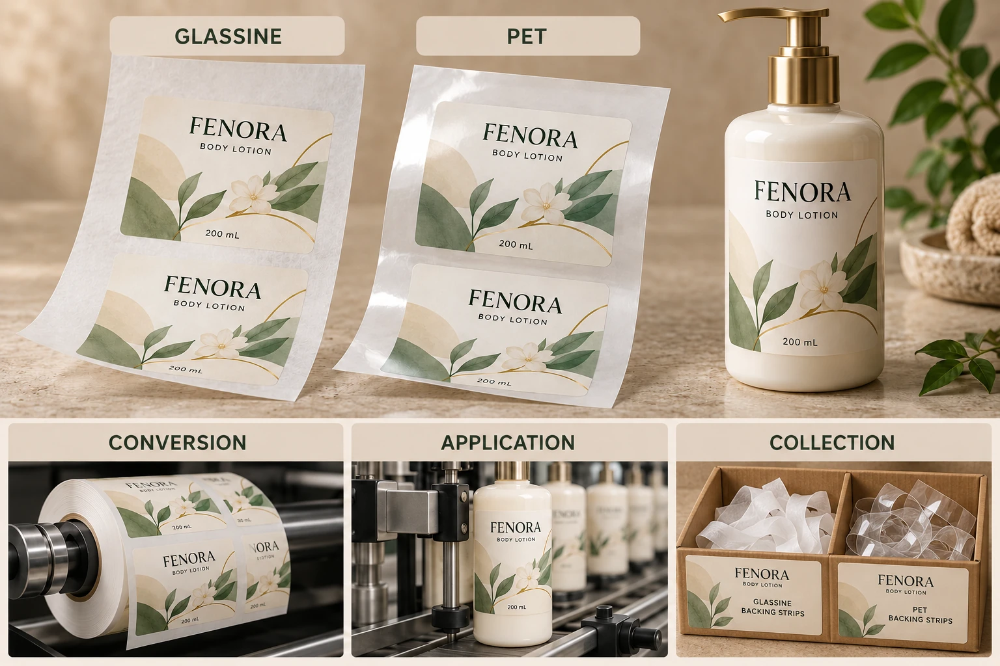

Identify the proposed liner rather than its appearance
Avery Dennison's liner overview identifies glassine and PET among widely used release-liner materials and discusses different options. Those product families are a starting point for identification, not interchangeable specifications for every job.
Obtain the actual liner reference and relevant construction data from the label supplier. Include the face stock, adhesive, finish and delivered web arrangement. A transparent face label does not establish that its liner is also PET, and a paper-looking backing does not identify its precise construction.
Keep the supplier's property names and units intact. Ask whether a value is typical reference data or an agreed delivery requirement. A neat side-by-side table should not turn unrelated values into a false ranking.
Ask the converter which route it supports
The proposed liner must work with the actual printing and converting arrangement. Ask the production party to confirm the intended construction and any relevant cutting or handling requirements. Do not specify a different liner independently of the complete job and assume the rest can remain unchanged.
If one option requires another preparation or conversion route, make that visible in the proposal. Compare actual supported offers, including any sample or setup implications, rather than assume a universal cost or productivity difference between the two material names.
The finished label boundary and backing condition remain separate questions. A suitable family name cannot establish that a particular converted roll was prepared correctly. Keep the acknowledged specification and any relevant sample review attached to the order.
Obtain the receiving operation's acknowledgement
Provide the actual proposed construction to the site that will apply the labels. Ask which information it needs about the web, liner and delivery arrangement. The operator should determine the appropriate evaluation under its equipment procedures.
The liner-release guide explains the separation interface and the limits of published data. A release entry is useful context, but it does not replace a representative operating review where one is required.
If the project changes from one liner to another, identify what else changes and which previous approvals remain relevant. A successful run on an older construction is evidence about that combination. Ask the operator whether it supports the proposed replacement or leaves a new question.
Compare the same job across both proposals
Use this editorial matrix with supplier and site records. Leave unknown fields open instead of guessing a winner.
| Decision area | Information for each proposal | Who confirms it? |
|---|---|---|
| Identity | Actual liner and complete construction reference | Label supplier |
| Conversion | Supported print/cut route and relevant requirements | Converter |
| Delivered web | Dimensions, winding and other agreed fields | Converter and receiving operator |
| Application | Representative review scope and observations | Equipment/site owner |
| Changes | Differences from the accepted prior construction | Relevant technical owners |
| Collection | Actual acceptance at the generation site | Site and receiving collector |
| Commercial scope | Current quotation and sample inclusions | Purchasing and supplier |
First establish that each proposal describes the same artwork, quantity and intended operation. Reconcile the construction and conversion route, obtain the receiving site's response and identify any missing sample evidence. Then compare the actual commercial terms and accepted collection arrangements.
Do not release a liner substitution if the receiving team has not addressed a relevant operating change. Do not reject an otherwise supported route solely because another liner family has an attractive general marketing claim.

Keep the collection decision local
The release-liner collection guide starts with the actual material and site. A recovery programme available in one country does not establish acceptance at an overseas co-packer. Ask the relevant receiving service for current requirements.
A hypothetical project may already have a supported glassine construction and a workable agreed collection route. Changing to PET solely for its name adds no demonstrated benefit. Another project may have a technically supported PET proposal that fits its converter, line and collection arrangements. That is a reason to consider it on its actual merits.
Neither case establishes the recyclability of the decorated cosmetic bottle. The spent liner and the product package follow different paths and need separate evidence for any claims.
For custom cosmetic labels, send container details, artwork, dimensions, quantities and the receiving site's requirements. Include the candidate liner references and any confirmed collector conditions. The contact form prepares a message; send specifications by email or WhatsApp. Choose an acknowledged complete route, with the backing's role kept visible.